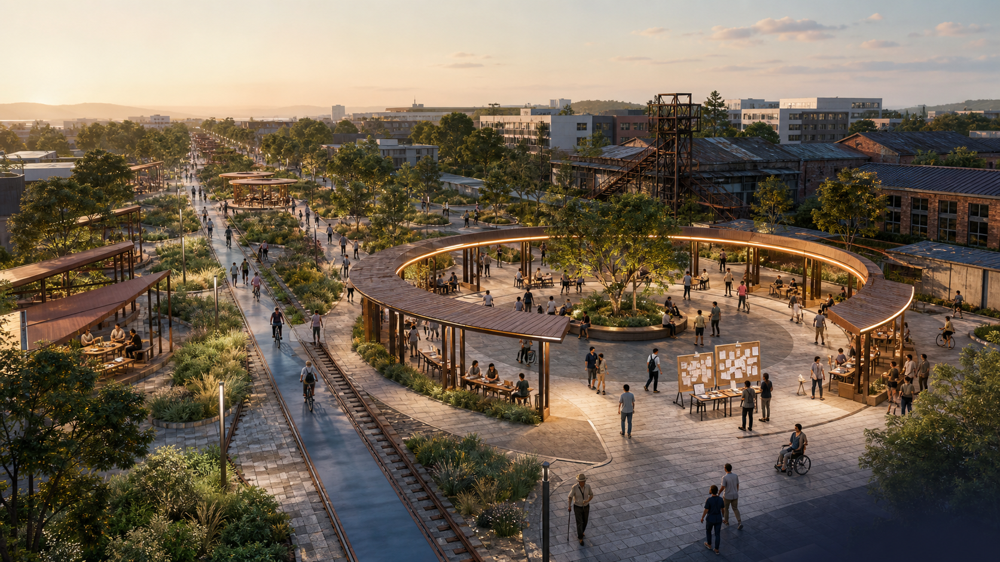
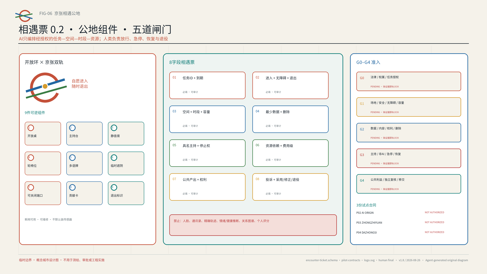

01 · 总览地图


02 · 三层范围
统筹层连接区域创新资源；总体层组织公共空间、服务与运营网络；重点区层验证三种可复制原型。五个开放接口只交换方法和去标识知识资产，不代表合作、资金、采购或结果互认。
03 · 用地分区、建筑与更新项目

04 · 交通慢行与蓝绿公共空间

地下高铁 · 地面遗产空间 · 既有13号线语境
官方报道只支持走廊级状态；未来13号线变化不能预支为现状，精确线位与保护界仍未知。
只认现有或正式批准的过线点
六缝是代表性到达—过线—进入—停留—退出审计，不是九条计划支路或新增道路；任何关键未知都会中断连接。
运营方 + 居民 + 无障碍同行者 + 专业人员
四方共同走完到达—退出，输出匿名问题/停止清单、修复责任与复查日期；任一角色未具名接受，或关键条件未知，即不发布路线。详见 visual/assets/site-baseline-audit.json。
05 · 重点区域

众智园 S01 合成空间验收：90分钟、候选容量12人、4小时场地块、3个受控测试位；完整基线在离线回放中通过，无隔离、无值守、旁路受阻或无法恢复均按预期拒绝。真实场地放行仍为 BLOCKED——这不是现场绩效。


06 · AI 场景与用户画像
学生/青年研究者 · OPC创业者 · 研发工程师 · 居民/社区组织 · 国际新人 · 一线运营者 · 无障碍优先访客
AI仅在授权目录内匹配任务、空间、时段与资源；不匹配个人，不生成画像，不自动判断资格。参与、审批、指派与扩展均由人类决定，并保留解释、纠错、申诉与非AI替代。
无本地账号国际新人 · 90分钟完整旅程（待验证）
到达
实体双语导视；不扫码、不建账号。
线下进入
双语真人解释最少数据、投诉与退出。
选择任务
从已授权任务板选择；可拒绝AI推荐。
共同完成
纸卡或口述参与；少数意见原样保留。
结果与删除
看双语结果；可投诉并要求删除临时偏好。
可见退出
不建永久账号；沿明示路线离场。
任务编排互操作测试
固定fixture；证据JSON；越权/回滚失败即停
有据多语公共服务测试
有来源/日期；拒答；关键误译转人工
无障碍活动运营沙箱
合成路线/容量；断网降级；恢复回执
跨校项目门诊
公开课题与设备需求；30天到期
导师小时
不保存私聊；导师本人确认
OPC合规门诊
公开政策导航，不作法律结论
人才与健康服务导航
不诊断，不留健康记录
公开测试伙伴招募
伦理与安全审核后方可启动
社区AI共创
保留少数意见；删除原始输入
文化导览共编
来源可追溯；专业人员签核
晚间开放演示
限时、限噪、可立即终止
年度相遇周
每届独立授权与复盘
07 · 相遇票、组件与准入

08 · 核心指标

09 · 任务覆盖与自检状态
Deterministic
路径、格式、双语、哈希与包状态
Spatial
拓扑、范围内、面积与比例复算
Visual
六图、离线HTML、有效A3/A0
Professional
公告1.3/1.4/1.5、agent.1–1.6、标准与深度
自检状态
四道仓库原生检查必须同时PASS；提交时命令输出为准。
未知项
FAR · HEIGHT · INVESTMENT · MUNICIPAL CAPACITY
10 · 来源、假设与版权
来源：官方公告、公开Agent任务书、海淀政府页面及六个一手机制案例，完整登记见 sources.json。假设：官方边界、控规、权属、文保、交通、市政与运营协议待补；PROV-KEY-003不是站点锚定范围，见 assumptions.json。低对比OSM衍生矢量方向语境已按ODbL署名，仅用于方向辨识且不是官方证据；不含第三方栅格影像、照片或商标。三张空间情境图于2026-08-09使用Codex内OpenAI图像生成功能，以纯文字提示独立生成，未使用同业图片或第三方照片作为直接输入；模型ID未暴露。它们仅为呈现层，不支撑现场、边界、权属、批准或建成判断，详见AI-CONCEPT-VISUALS-20260809与copyright_statement.md。